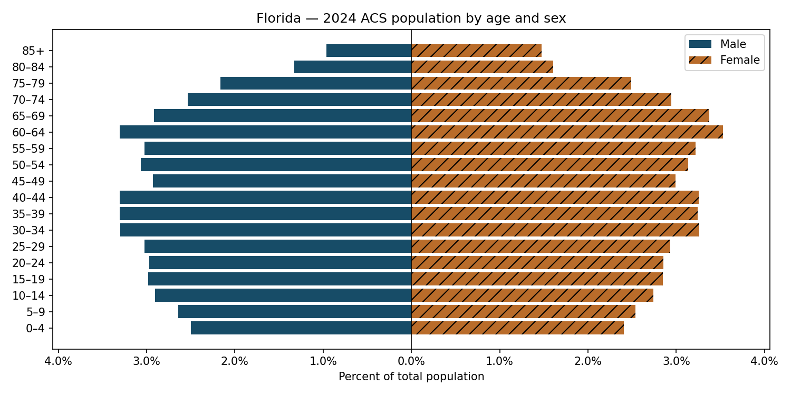

Also known as: age-sex pyramid.
Apply the Census Bureau Statistical Quality Standards, revised September 29, 2026, within their stated scope. The chart-selection advice and implementation checks on this page explain practical design choices; they do not create additional agency mandates. Treat Essential items as the core design conditions for this chart, and confirm formal applicability through the program’s review process.
Coordinate this page with Titles and Subtitles, Legends, Sources, and Visualizing Uncertainty. Keep detailed component guidance in those shared pages rather than duplicating it here.
A population pyramid displays the distribution of a population by age and sex, with horizontal bars extending from a shared zero line. Conventionally, males are on the left and females on the right. The shape need not resemble a triangle. Pyramids show counts or the percentage of the whole population in each age-by-sex group.
Recommended: Use a population pyramid to compare age structure by sex for one population or a small number of populations with aligned age categories. Use small multiples with identical scales for comparison across states or periods.
Not recommended: For detailed comparisons among many geographies or many age-sex categories, an accessible table or another chart may communicate values more effectively. Use a line graph when the primary question concerns a trend over time rather than population composition at one date.
| Question | Representation | Interpretation caution |
|---|---|---|
| How many people are in each age-sex group? | Mirrored count bars | Larger geographic areas often have larger bars because population sizes differ. |
| What share of a population falls in each group? | Mirrored percent-of-total bars | Both sides together sum to 100%; labels must name the denominator. |
| How do two populations differ? | Small-multiple pyramids | Keep age bins, units, and axis scales consistent. |
| Do users need exact estimates? | Accessible data table | Provide the table alongside—not solely through—the image. |
Use direct panel headings, age labels, mirrored number labels and a meaningful legend. Bars should have visible separators and sufficient contrast. Male/female positions and text labels must remain interpretable without color. In a chart with multiple panels, use a shared axis to avoid artificial visual differences. Provide short alternative text explaining the display and a separate HTML data table with exact values and clear headers. Review chart readability at 200% zoom and test the rendered page by keyboard and screen reader. Accessibility is not established by image production alone.
Use narrow separators between age rows without making the row boundaries dominate the bars. Place age labels outside the bar field, on both outer sides when that improves comparison; do not place labels over the central data marks. Keep the shared zero baseline visually clear. Use two principal sex-category fills, with optional light/dark variation only when it improves row tracking. Text labels and left/right placement must identify the categories even without color. A highlight needs an explicit purpose and a redundant noncolor cue rather than an unexplained extra category.
Use these comparisons to connect each design choice with its effect on interpretation.
| Problematic approach | Why it matters | Preferred approach |
|---|---|---|
| Each sex is normalized to 100% but the axis says percent of total population | The two sides sum to 200% under a misleading denominator label | Divide all age-sex estimates by the same whole-population total, or clearly name a different measure |
| Left bars have negative value labels | Drawing coordinates look like negative population estimates | Use negative coordinates for placement only; display positive magnitudes in labels and the table |
| Source age rows are treated as equal-width five-year bands | Unequal source intervals distort the intended age grouping | Use the documented row mapping; combine split source intervals before plotting |
Test the chart at its intended display size and with enlarged text. Follow the reading sequence from title to explanation, figure, table, and source. Check that labels and meaningful marks remain distinguishable without color and that any controls can be operated by keyboard with visible focus. Read the explanation and table with a screen reader to confirm that they convey the same measures, units, missing-data conditions, and important relationships as the chart.
Use automated and manual accessibility testing together. A downloadable CSV supplies values but does not replace the chart’s explanatory narrative; see USWDS visualization guidance. Record the page/version, tool or assistive technology, result, and corrective action. Apply the sponsor’s agreed accessibility baseline rather than treating a palette simulation as a conformance test.
The following examples are retained from the Census guidance. Their datasets, periods, universes and design lessons remain distinct. Some illustrate limitations or less-preferred choices; inclusion does not certify every design or its accessibility.
Example 1: Same scale for side-by-side population pyramids
Example 2: Separate color for male and female bars

Example 3: Using color to highlight specific generations or age groups

Example 4: Using color for superimposed population pyramids

Example 5: Using too many colors so it is difficult to distinguish pyramids

2024 ACS age-by-sex composition. B01001: apply the documented age-band mapping and use a common whole-population denominator in percentage mode.
What this adds: Adds reproducible age aggregation, total reconciliation and consistent mirrored scales.
Run evidence: The supplied November 10, 2026 run generated this example. Saved-data arithmetic and chart layout were reviewed for this package; published-page accessibility testing remains outstanding.

Source and interpretation: U.S. Census Bureau, 2024 ACS 1-Year Estimates, Detailed Table B01001, Florida. Published age-by-sex counts are aggregated into five-year bands through 80–84 and an open-ended 85+ band. The supplied run completed November 10, 2026 (UTC).
Both sides use the whole-population denominator of 23,372,215. Aggregated male counts total 11,488,598 and female counts total 11,883,617; the combined shares sum to 100%. Left-side geometry is negative only for drawing: source counts and printed shares remain nonnegative. These use the source table’s published sex categories; the chart does not display age-cell uncertainty.
Selected values (rounded for display; CSV retains exported precision):
| Sex category | Population estimate | Share of total (%) |
|---|---|---|
| Male | 11,488,598 | 49.15 |
| Female | 11,883,617 | 50.85 |
Read the data tables · Download population_pyramid_acs.csv
Implementation: Python source. The original illustrations above and the ACS output have separate asset paths and source statements.
Use the original illustrations to discuss design choices and their source-specific limitations. Use the ACS addition to demonstrate a documented data-to-chart workflow. Do not combine values across examples, imply that they use one dataset, or relabel a historical image as a new ACS output.
The following contract defines the intended behavior of the linked examples. Confirm the files, commands, dependencies, and generated results against the repository before publication.
Inputs: 2024 ACS 1-Year B01001 state-level total, sex subtotals, detailed age-sex estimates, source MOEs, and annotations, with an explicit output age-band mapping.
Use the mapping below to construct mutually exclusive five-year age bands. Reconcile source age rows to sex subtotals and the whole-population total before computing shares. Preserve all source MOEs; derived bin or percentage uncertainty requires a separately documented calculation.
Use the supplied
Python implementation and the ACS example
runner. The runner maps this page to job
population_pyramid. Its dependencies are listed in requirements.txt.
Confirm supported input options in the implementation and its
accompanying README.
The executed notebook contains saved outputs from the supplied ACS run. The run status CSV records generated results. The notebook produces the ACS additions; it does not recreate the historical Census illustrations.
The analytical definitions and output checks on this page also specify the requirements for an R counterpart. A verified R implementation is not bundled in this combined package. Retain R execution and Python/R agreement as outstanding validation tasks; do not describe them as completed.
A personal Census API key is required for data queries under the current
Census API guidance. Read CENSUS_API_KEY from the
analyst’s environment. Do not include keys in source control, saved
notebooks, request logs, error messages, or execution manifests; redact
the key query parameter wherever a request URL is recorded.
No shared developer credential or private file path should be
required.
For each run, save the validated data, chart PNG/SVG, a semantic HTML table, descriptive-text draft, and a nonsecret manifest in the selected output folder. Include source table/variables, full reference period, geography, units, transformations, exclusions, dependency versions, and retrieval time. Pin or record versions actually tested. For identical inputs, R and Python should reproduce the same analytical values within an explicitly documented tolerance; visual styling need not be pixel-identical.
When changing years or geographies, recheck product coverage, definitions, annotations, and comparability. A successful run does not establish statistical significance or accessibility conformance.
| Check | Expected evidence |
|---|---|
| Reconciliation | All detailed source age rows appear once; age-bin totals equal the corresponding sex subtotals, and both sex subtotals equal B01001_001E |
| Percentages | For a positive total, all displayed age-sex shares sum to 100% combined within the stated rounding tolerance |
| Geometry and labels | Both sides and comparison panels use identical magnitude limits; age groups increase upward; table values remain nonnegative |
Source-statement pattern for this example: U.S. Census Bureau, American Community Survey, 2024 ACS 1-Year Estimates, Detailed Table B01001, selected states. Five-year age groups derived from source rows; percentage mode uses the total population as denominator. Add the specific source or reproducible request link and actual retrieval date; omit the API key. Identify derived calculations separately from published estimates.
| Error | Correction |
|---|---|
| Each sex summed to 100%, resulting in 200% combined | Divide every group by the total population, or change labels to clearly state a different measure. |
| Male bars interpreted as negative population | Explain that left-side negative coordinates are a drawing convention only. |
| Different axis limits used for side-by-side comparison | Apply the same limits on both sides and across panels. |
| Aggregated bins shown with unverified MOEs | Preserve the original estimates and verify variance methods before reporting derived MOEs. |
| Original image lacks accessible context | Supply a descriptive text alternative and accessible values table. |
Related guidance: Small Multiples, Line Graph, Visualizing Uncertainty.
Data source: 2024 ACS 1-Year Table B01001 metadata.
The original Census page and its example assets are preserved in this package; see the review record for the exact baseline and changes.
Use the September 29, 2026 consolidated Census Statistical Quality Standards, especially E1-6 (replication documentation), E2-2.3 (visualization requirements), and E3-2.4 (visualization review). Retain review findings and corrections separately from the design checklist.